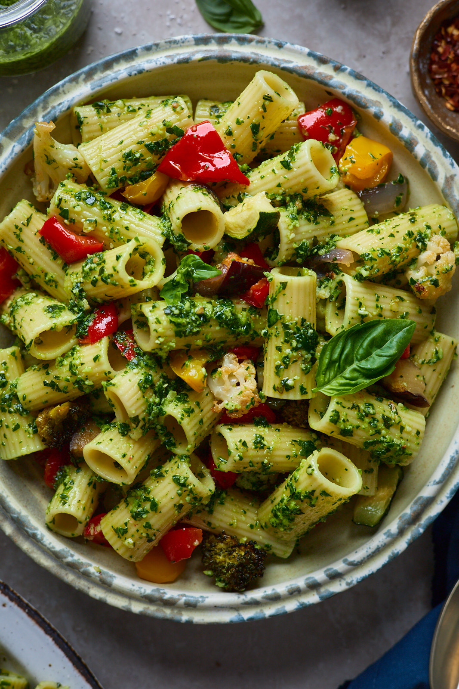

Pasta Pesto

A classic pasta pesto dish with some additional nutrition.
This is a quick and easy to make pasta pesto dish with some protein and vegetables to add some color
and flavor to your plate. Perfect for days when you need a quick and fulfilling meal, or if you just
don't feel like spending a long time cooking.
Ingredients
- Pasta of your choice
- Genovese Basil Pesto
- Olive Oil
- Tomatoes
- Zucchini
- Yellow Onion
- Red Bell Peppers
- Chicken
- Salt
- Black Pepper
- Chilli Flakes
- Italian Spices
Instructions
- Start boiling water for your pasta with a dash of salt and olive oil.
- Cut your vegetables and chicken into blocks while preheating a pan on medium.
- Add vegetables and chicken to the pan.
- Add salt, pepper, chilli flakes, and Italian spices to the pan to taste.
- Take a tablespoon of pesto and add it to the chicken and vegetables.
- Once the pasta is finished, remove from heat and pour out water.
- Add pasto to the pasta (to taste), chicken and veggies, and mix.
- Enjoy.